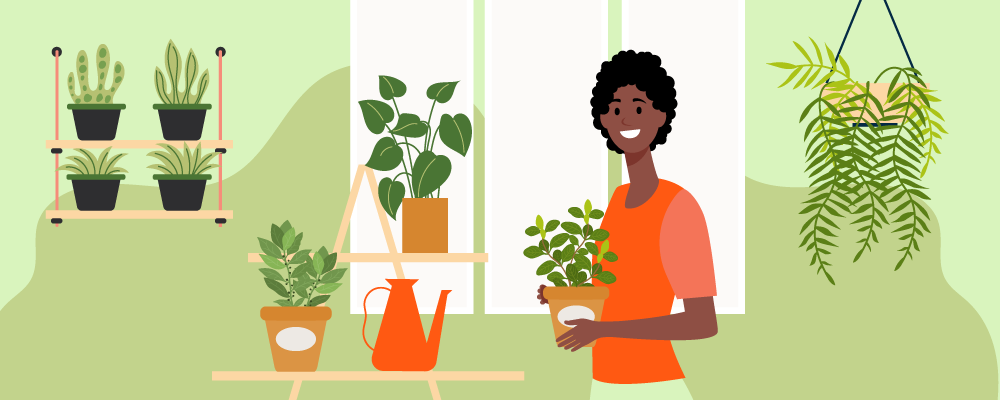

Cultivar plantas alimentícias em casa é uma prática enriquecedora e sustentável, que traz benefícios tanto para o indivíduo quanto para o meio ambiente. Aqui está um guia básico sobre como começar e a importância dessa atividade.
Como Cultivar Plantas Alimentícias em Casa
1. Escolha das Plantas
- Adaptação ao Clima: Escolha plantas que se adaptem bem ao clima da sua região.
- Espaço Disponível: Considere o espaço que você tem. Muitas hortaliças, ervas e até alguns frutos podem ser cultivados em vasos.
2. Sementes e Mudas
- Qualidade: Adquira sementes e mudas de boa qualidade, preferencialmente de fornecedores confiáveis.
- Variedades: Opte por variedades que sejam conhecidas por um bom desempenho em hortas caseiras.
3. Preparo do Solo
- Nutrição: Use terra de boa qualidade, rica em matéria orgânica. Você pode melhorar o solo com compostagem caseira.
- Drenagem: Certifique-se de que o solo tenha boa drenagem para evitar o encharcamento das raízes.
4. Plantio
- Espaçamento: Respeite o espaço necessário para o desenvolvimento de cada planta.
- Profundidade: Siga as instruções de plantio para cada tipo de semente ou muda.
5. Cuidados Diários
- Rega: Mantenha a terra úmida, mas não encharcada. A frequência de rega varia conforme a planta e o clima.
- Luz Solar: A maioria das plantas alimentícias precisa de bastante luz solar direta, pelo menos 6 horas por dia.
- Manutenção: Fique atento a ervas daninhas e pragas. Use métodos orgânicos de controle sempre que possível.
Importância de Cultivar Plantas Alimentícias em Casa
Sustentabilidade Ambiental
- Redução da Pegada de Carbono: Diminui a necessidade de transporte de alimentos.
- Uso Eficiente dos Recursos: Menor uso de embalagens e redução do desperdício de alimentos.
Benefícios à Saúde
- Alimentos Mais Frescos e Nutritivos: As plantas colhidas no ponto ideal de consumo tendem a ser mais ricas em nutrientes.
- Redução de Produtos Químicos: Ao cultivar seus próprios alimentos, você pode evitar o uso de pesticidas e fertilizantes químicos.
Educação e Consciência
- Conexão com a Natureza: Cultivar seu próprio alimento promove um maior entendimento e apreciação pela natureza.
- Educação Alimentar: É uma excelente maneira de ensinar crianças sobre de onde vem os alimentos e a importância da alimentação saudável.
Economia
- Redução de Custos: Economia significativa nos gastos com alimentos, especialmente se você cultivar itens que costumam ter preço elevado no mercado.
Bem-estar Psicológico
- Redução do Estresse: O contato com a terra e o cuidado com as plantas podem ser atividades relaxantes e terapêuticas.
Cultivar plantas alimentícias em casa pode ser uma atividade gratificante e produtiva, oferecendo frescor e qualidade que muitas vezes não se encontra em alimentos comprados. Além disso, contribui para um estilo de vida mais sustentável e consciente.